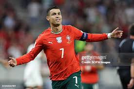
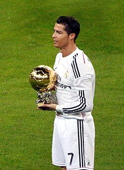

| Full Name | Cristiano Ronaldo dos Santos Aveiro |
| Date of Birth | 5 February 1985 |
| Age | 41 |
| Nationality | Portugese |
| Height | 1.87m |
| Profession | Footballer |
| position | forward |
| Current Club | Al Nassr FC |
Cristiano Ronaldo started his professional career at Sporting CP. He later played for Manchester United, Real Madrid, Juventus, and currently Al Nassr. He is famous for his incredible goal scoring records and leadership skills.After impressing in Sporting's youth teams, he was promoted to the main team by first-team manager László Bölöni. At age 17, on 14 August 2002, he played his first official match for the first team, in a UEFA Champions League qualifying round at José Alvalade Stadium against Inter Milan,[35] and his Primeira Liga debut, took place a month later against Braga, and on 7 October, he scored two goals against Moreirense in their 3–0 win.[36] Over the course of the 2002–03 season, his representatives suggested the player to Liverpool manager Gérard Houllier and Barcelona president Joan Laporta.[37] Manager Arsène Wenger, who was interested in signing Ronaldo, met with him at Arsenal's stadium in November to discuss a possible transfer.
Ronaldo is a Catholic.[409] Within his ancestry, he is of (one-eighth) Cape Verdean descent through his great-grandmother.[410] Ronaldo's great-grandmother on his father's side, Isabel da Piedade, an African woman, was born in the island of São Vicente, in what was then Portuguese Cape Verde, and moved to the island of Madeira when she was 16.[411][412] His father, José, died of an alcoholism-related liver condition at age 52 in September 2005 when Ronaldo was 20.[413] After her son achieved legendary status in world football, Cristiano Ronaldo's mother, Dolores Aveiro, became a popular personality in Portugal to such an extent that advertising campaigns for well-known brands in the country, such as Maggi, MultiOpticas and Pingo Doce, have featured her in commercials
At Real Madrid, Ronaldo continued to play a more offensive role, while his creative and defensive duties became more limited, although not entirely diminished.[265] Initially deployed as a centre forward by managers Manuel Pellegrini and José Mourinho, he was later moved back onto the left wing, though in a free tactical role; this position allowed him to drift into the centre at will to get onto the end of crosses and score, or draw out defenders with his movement off the ball and leave space for teammates to exploit.[265][266][267] Madrid's counter-attacking style of play also allowed him to become a more efficient and consistent player, as evidenced by his record-breaking goalscoring feats. While he mainly drew praise in the media for his prolific goalscoring, Ronaldo also demonstrated his ability as an effective creator in this role.[268][269][270] This unique role has been described by pundits as that of a "false", "attacking", or "goalscoring winger", as Ronaldo effectively almost functioned as a striker at times with his central runs into the penalty area, despite actually playing on the left flank
"Your love makes me strong, your hate makes me unstoppable."
Created by Sujitha | Cristiano Ronaldo HTML Project
Created by Sujitha | Cristiano Ronaldo HTML Project